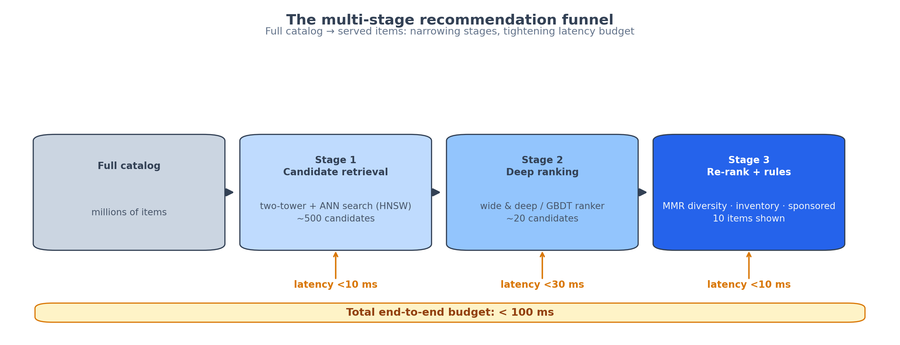
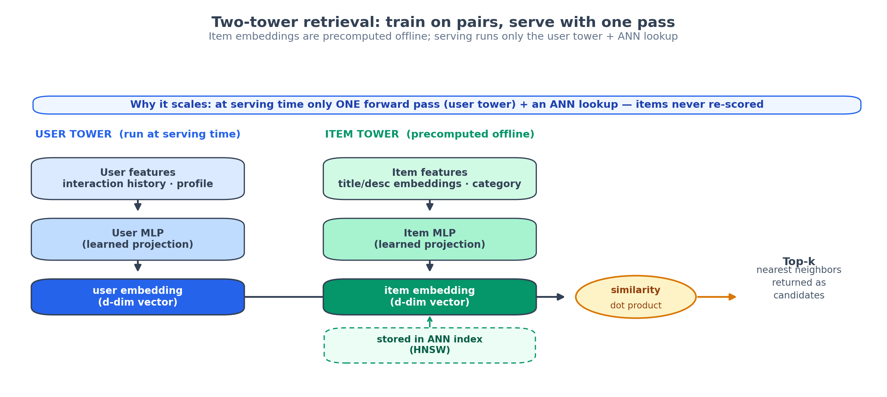
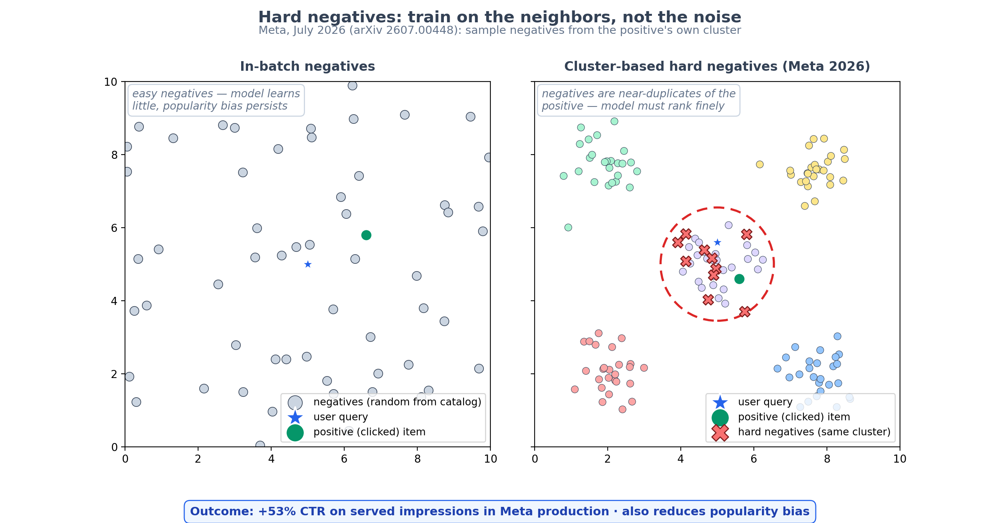
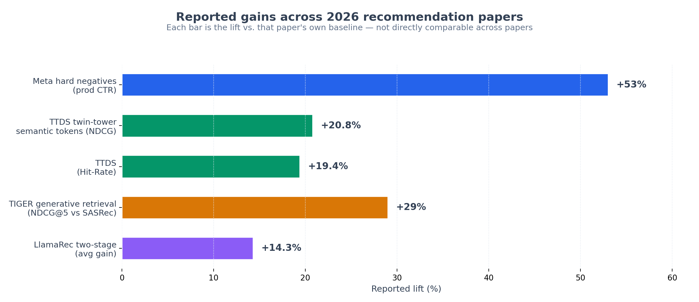

One-paste order for Medium's new-story editor: title → body → diagrams → notebook link → checklist.
Every time you open Netflix, YouTube, or TikTok, a model scores millions of items against your taste — and finishes in under 100 milliseconds. It doesn't actually look at every item. It cheats, in a way that works. Here's the architecture every production recommender in 2026 is built on, and what this year's research just changed about it.
ELI5: the funnel
Imagine a library with 10 million books and one librarian who must hand you 10 books in under a tenth of a second. She can't read them all, so she works in stages:
- Retrieval (~10ms): glance at your reading history and pull 500 roughly-matching books off the shelves. Fast and loose — optimized for recall (don't miss good candidates).
- Ranking (~30ms): actually read the blurbs of those 500, pick the 20 best. Slow and careful — optimized for precision.
- Re-ranking (~10ms): enforce variety (not five thrillers in a row), drop out-of-stock items, slot in a sponsored pick, apply business rules.
This three-stage funnel is the canonical design, from YouTube's 2016 system to everything shipping today. No single model meets a 100ms latency budget over a million-item catalog, so you split the job: cheap models shrink the pool, expensive models pick the winners. The latency budget is a law of physics — the funnel isn't going anywhere.
How it works: two towers and a dot product
The retrieval stage — the first, fastest cut — is dominated by the two-tower model. Two neural networks:
- A user tower eats your features (watch history, clicks, profile) and outputs a vector
u— say, 256 numbers that encode your taste. - An item tower eats item features (title, description, category) and outputs a vector
v— 256 numbers encoding what the item is.
Your score for an item is the dot product u·v. Simple. The magic is the serving trick: every item vector is precomputed offline and stored in an approximate nearest-neighbor index (HNSW). At request time, the user tower runs once to produce u, and the index returns the 500 nearest item vectors in single-digit milliseconds. The item side never runs online at all. That's the 10-millisecond trick: turn recommendation into a nearest-neighbor lookup.
Training is where the subtlety lives. You can't compute a softmax over millions of items per training example, so you use sampled softmax: score the positive against a few hundred negatives and treat that as the distribution. Which negatives you sample decides everything:
- In-batch negatives: treat other users' positives in the same minibatch as your negatives. Nearly free — but limited by batch size and biased toward popular items.
- Out-of-batch negatives: sample randomly from the full catalog. Diverse, but mostly "easy" negatives the model separates trivially. Wasted compute.
- Mixed: combine both. The industry default.
- LogQ correction (Google, since adopted by ByteDance and Kuaishou): subtract the log sampling probability from each logit, so popular items aren't unfairly penalized for appearing as negatives constantly.
Get the negatives wrong and you don't just lose accuracy — you build a popularity feedback loop: popular items get surfaced more, get clicked more, train the model to surface them more. Breaking that loop is where 2026's research is aimed.
State of the art
Meta fixed the negatives (July 2026). In Real-Time Hard Negative Sampling via LLM-based Clustering for Large-Scale Two-Tower Retrieval, the team clusters items with an LLM, then samples negatives from the same cluster as the positive — items genuinely similar to the thing the user clicked, instead of random catalog filler. Their GOOBS system generates these on the fly during training and scales to billions of examples. Deployed as a retrieval source in a multi-source production system: +53% CTR on its served impressions versus the prior source model, with measured popularity-bias reduction. The headline is architectural heresy: negatives, not model size, were the bottleneck.
Sequential recommendation went retrieval-native (ICLR 2026). RetrievalFormer reformulates sequential recommendation as a dual-encoder problem: decouple item representations from user-sequence modeling so that ANN search is the serving mechanism — no more O(N) scoring of the catalog at inference. It matches strong transformer baselines (SASRec, BERT4Rec) on accuracy while running retrieval-speed inference. And because items are encoded from features rather than IDs, it generalizes to unseen items: 8.0–22.7% Recall@20 under a strict 100%-cold-start protocol (with the honest caveat of a 25–35% drop versus warm items).
Semantic tokens beat raw IDs. The TTDS framework (twin-tower dynamic semantic token generator) replaces item IDs with learned semantic tokens that both towers coordinate around: +19.41% Hit-Rate and +20.84% NDCG on average over prior SOTA across three public datasets. Generative retrieval (TIGER, which predicts semantic IDs token-by-token) shows the same pattern: up to +29% NDCG@5 over SASRec on Amazon Beauty.
LLMs took over the ranking stage. LlamaRec's two-stage design — cheap retrieval, then a Llama 2 reranker with a verbalizer head — beats every other LLM-based recommender baseline by ~14% on average. And LLM-RS (July 2026) goes further, generating explicit reasoning chains that weigh each candidate against inferred preferences: SOTA-matching accuracy plus human-readable explanations, which lifted user trust and long-term engagement in their experiments.
The through-line is clean: retrieval keeps getting cheaper and smarter (dual encoders, cluster-based hard negatives), ranking keeps getting more expressive (LLM rerankers with reasoning), and the funnel holds it all together.
Takeaways
- Every production recommender is a funnel: retrieval (<10ms) → ranking (<30ms) → rerank (<10ms). Design for the latency budget first, model choice second.
- Two towers + an ANN index is the retrieval standard. Precompute item embeddings offline; at serving time, run the user tower once and do a nearest-neighbor lookup.
- Negatives matter more than architecture. Meta's July 2026 result: cluster-based hard negatives delivered +53% CTR in production. Audit your sampling before you upsize your model.
- Correct for sampling bias. LogQ-style corrections are standard at Google, ByteDance, and Kuaishou for a reason — without them, popular items win by default and the feedback loop tightens.
- Watch semantic tokens. Pure ID-based models can't do cold start. Feature- and semantic-ID encoders (RetrievalFormer, TTDS, TIGER) are the current frontier — and LLM reasoning on top is where ranking is headed.
References: Real-Time Hard Negative Sampling via LLM-based Clustering for Large-Scale Two-Tower Retrieval (Meta, arXiv 2607.00448, July 2026) · RetrievalFormer (ICLR 2026, under review) · Unleash LLMs Potential for Recommendation by Coordinating Twin-Tower Dynamic Semantic Token Generator (arXiv 2409.09253) · LLM-RS: A Large Language Model-Based Sequential Recommendation with Reasoning (MDPI, July 2026) · TIGER: Recommender Systems with Generative Retrieval (arXiv 2305.05065) · LlamaRec (arXiv 2311.02089).
Diagrams
Diagram 1 — The three-stage funnel — retrieval, ranking, re-ranking with latency budgets

Diagram 2 — Two-tower retrieval — user tower plus item tower, served via an ANN index

Diagram 3 — Hard negatives — cluster-based sampling (Meta, July 2026)

Diagram 4 — Reported gains across 2026 retrieval research
